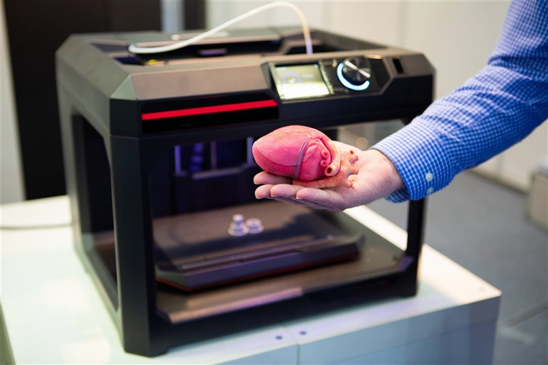

| Opinión | ||
| El objetivo de la fabricación de órganos para trasplante es desarrollar métodos para crear órganos funcionales en el laboratorio, utilizando una combinación de células madre, biomateriales y técnicas de bioingeniería. También para evitar más desafíos asociados con la escasez de donantes y el riesgo de rechazo inmunológico. | ||
| Pero aún se encuentra en una etapa temprana, se espera que en el futuro pueda ofrecer soluciones innovadoras para abordar la escasez de órganos y mejorar la calidad de vida de los pacientes que necesitan trasplantes. |  |